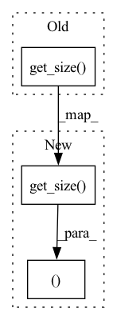

Pattern ID :32659

Before Change
torch.nn.init.xavier_uniform_(self.fc2.weight)
def __str__(self) -> str:
return "TorchMLP(size=%d)" %self.get_size()
After Change
self.model.apply(_init_weights)
def __str__(self) -> str:
return "TorchMLP(size=%d)\n%s" %(self.get_size(), str(self.model))
In pattern: SUPERPATTERN
Frequency: 3
Non-data size: 3
Instances
Fragment ID: 95037250
Project Name: makgyver/gossipy
Commit Name: 31a93a404f8bfba3869c5eb733962a438f4806f0
Time: 2021-08-29
Author: mak1788@gmail.com
File Name: gossipy/model/nn.py
M Class Name: TorchMLP
N Class Name: TorchMLP
M Method Name: __str__(1)
N Method Name: __str__(1)
M Parent Class: TorchModel
N Parent Class: TorchModel
M File Name: gossipy/model/nn.py
N File Name: gossipy/model/nn.py
M Start Line: 38
M End Line: 38
N Start Line: 57
N End Line: 57
'>
Before Change
return self._get_n_params()
def __repr__(self) -> str:
return "TorchModel(size=%d)" %self.get_size()
def get_params_list(self):
return ParameterList(self.parameters())
After Change
return self._get_n_params()
def __repr__(self) -> str:
return "%s(size=%d)" %(self.__class__.__name__, self.get_size())
def get_params_list(self):
return ParameterList(self.parameters())
'>
Fragment ID: 95037251
Project Name: makgyver/gossipy
Commit Name: 7601b023e9ecd0604a37cf18afd67e14a2044939
Time: 2022-04-29
Author: mak1788@gmail.com
File Name: gossipy/model/__init__.py
M Class Name: TorchModel
N Class Name: TorchModel
M Method Name: __repr__(1)
N Method Name: __repr__(1)
M Parent Class: Sizeable,torch.nn.Module
N Parent Class: Sizeable,torch.nn.Module
M File Name: gossipy/model/__init__.py
N File Name: gossipy/model/__init__.py
M Start Line: 39
M End Line: 39
N Start Line: 39
N End Line: 39
'>
Before Change
torch.nn.init.xavier_uniform_(self.w.weight)
def __str__(self) -> str:
return "TorchPerceptron(size=%d)" %self.get_size()
//FIXME: generalize to n hidden layers
class TorchMLP(TorchModel):
def __init__(self,
After Change
xavier_uniform_(self.model._modules["linear"].weight)
def __str__(self) -> str:
return "TorchPerceptron(size=%d)\n%s" %(self.get_size(), str(self.model))
class TorchMLP(TorchModel):
'>
Fragment ID: 95037252
Project Name: makgyver/gossipy
Commit Name: 31a93a404f8bfba3869c5eb733962a438f4806f0
Time: 2021-08-29
Author: mak1788@gmail.com
File Name: gossipy/model/nn.py
M Class Name: TorchPerceptron
N Class Name: TorchPerceptron
M Method Name: __str__(1)
N Method Name: __str__(1)
M Parent Class: TorchModel
N Parent Class: TorchModel
M File Name: gossipy/model/nn.py
N File Name: gossipy/model/nn.py
M Start Line: 19
M End Line: 19
N Start Line: 28
N End Line: 28